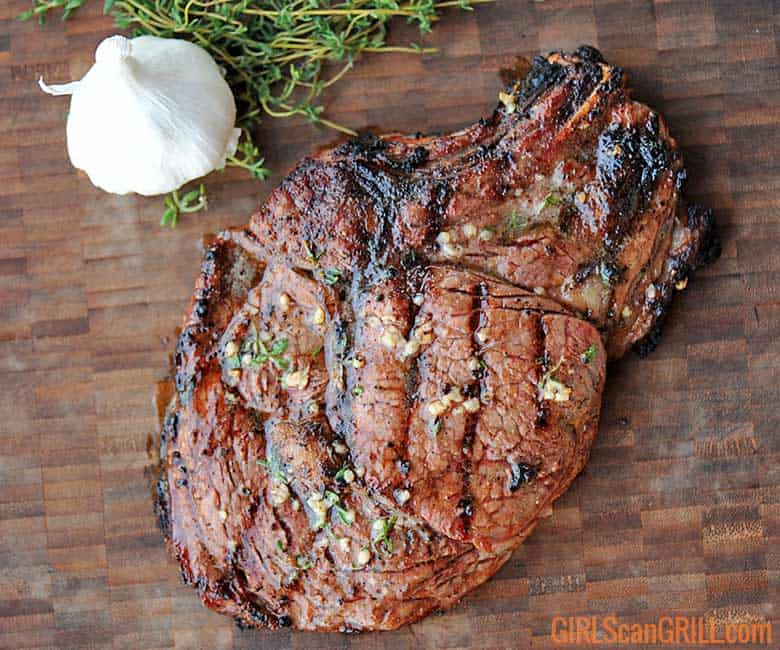

Actually, this is an excellent marinade for any steak.
The marinade mainly consists of Worcestershire sauce and brown sugar.
The sugar makes the steaks tender and gives just a hint of sweetness.
I sometimes add some Dijon mustard or red pepper flakes for a little zing.

Preparation time: 10min
Cook time : 15min
Ingredients list:
- (1/2 pound) rib-eye steaks.
- garlic powder to taste.
- onion powder to taste
- salt and pepper to taste.
- 1 ¾ cups Worcestershire sauce.
- ⅓ cup brown sugar.
Directions:
- Season the steaks with the garlic powder, onion powder, salt, and pepper, and set aside.
- Pour the Worcestershire sauce and brown sugar into a large resealable plastic bag, seal, and shake to mix.
Pour half of the marinade into another large resealable bag. Place two steaks in each bag, and turn to coat.
- Squeeze out excess air, and seal the bags. Refrigerate for at least 1 hour.
- Preheat grill for high heat. Drain the marinade from the steaks into a small saucepan, and bring to a boil;
boil for several minutes.
- Brush grill grate with oil. Grill steaks 7 minutes per side, to desired doneness.
Baste often with the boiled marinade during the final 5 minutes of cook time.
Return to top
Return to main page